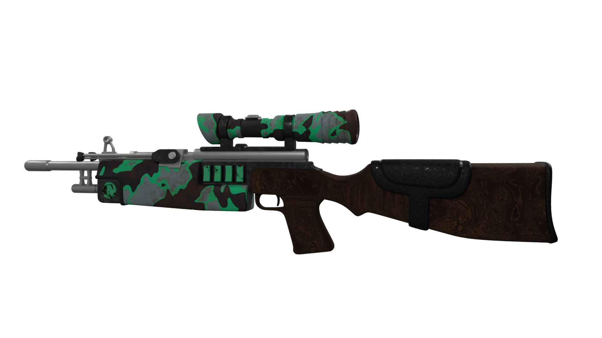
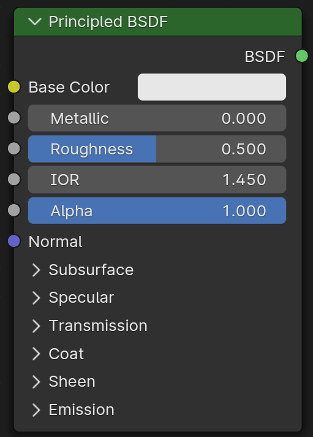
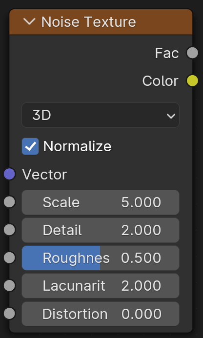
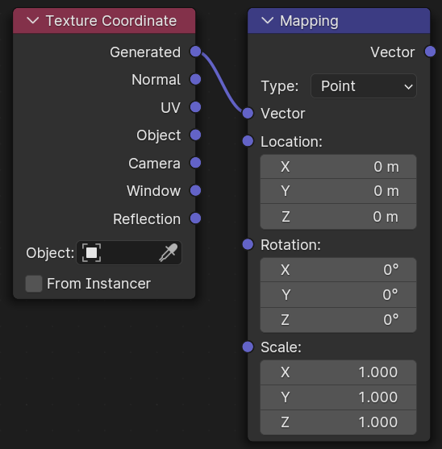
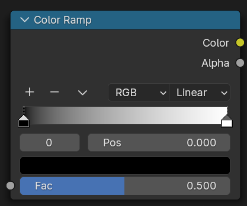
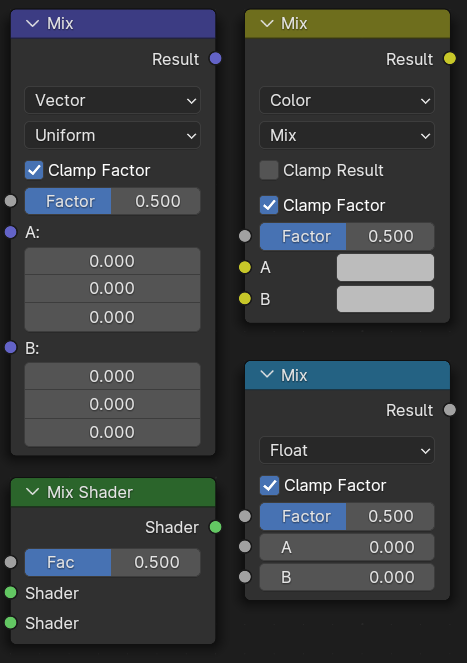
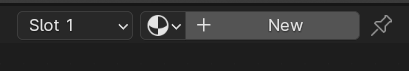
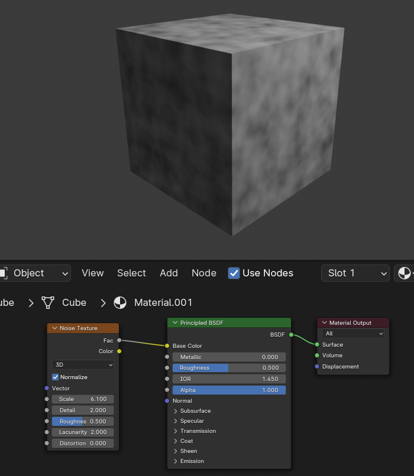
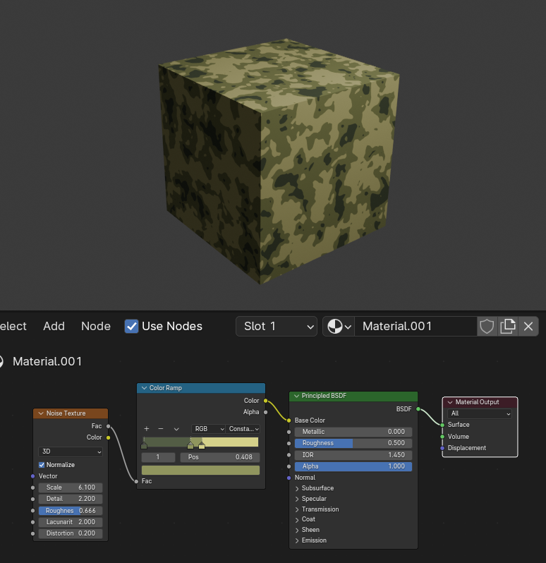
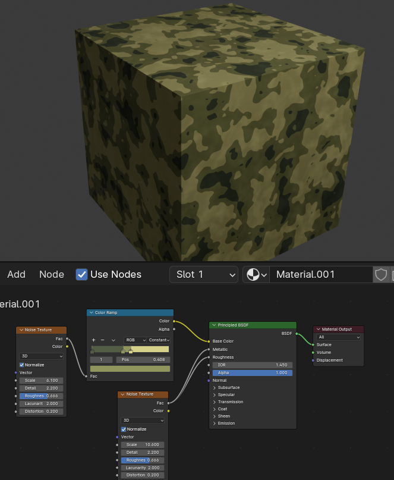

Shaders |
 |
Intro
Welcome to Silly's 3D shader node section! Here, we'll discuss texturing your model to react to lights, using procedural nodes.
Data Streams
Nodes are how we construct materials, node inputs are on the left, and outputs are on the left. Data streams can be plugged from outputs into inputs, and data comes in different forms:
| Color | Yellow data stream containing color. |
| Float | Gray node containing a number supporting decimal places. |
| Vector | Purple data stream containing a 3 dimensional number, can contain rotation or location |
| Shader | Green data stream containing the full lighting information needed for rendering. |
Nodes
| Principled BSDF Node |  | Base shader node, contains information for almost all materials |
| Texture Nodes |  | Orange nodes like the noise node generate textures, with technically limitless detail since they don't use pixels. |
| Mapping Nodes |  | A mapping setup can be created by hitting ctrl+T, and will drive the location of textures using UVs or generated location. A texture coordinate node outputs the location, and the mapping node can be used to move it. |
| Color Ramp & Math nodes |  | The color ramp node can be used to map data to a new "ramp", used to push colors to other ones or make adjustments to generated textures like waves or noise. Similarly, the math node can be used to apply operations to inputted data. |
| Mix Nodes |  | The mix and mix shader nodes will mix between colors, numbers, vectors and shaders, the first 3 in one node and the last in a separate node. These will smoothly mix between two values, for example, mixing the colors red and yellow with a factor of 0.5 would result in an orange. |
Let's make a material!
Now that have the tools, we're going to create a simple camo material.
First, we'll create a material on our object from the shading tab at the top of the screen.
This creates a Principled BSDF node and a node output automatically. We'll need a noise texture for our camo, and feel free to play with the values on the node to test them out!
Now we'll need some well-seperated colors. We'll use a Color Ramp for this, and insert it right after to noise texture. We'll set the mode from linear to constant, and add some colored stops to control our color.
The last thing we'll do is add some uneven roughness and metallic maps. Metallic controls how much light is reflected off of a surface, and roughness changed how clear the reflection is. We can just use another noise texture for this.
This will bring a little more realism in, and our material is done! Try out different nodes, because there are waayy more than these few, and mess with different inputs and outputs.